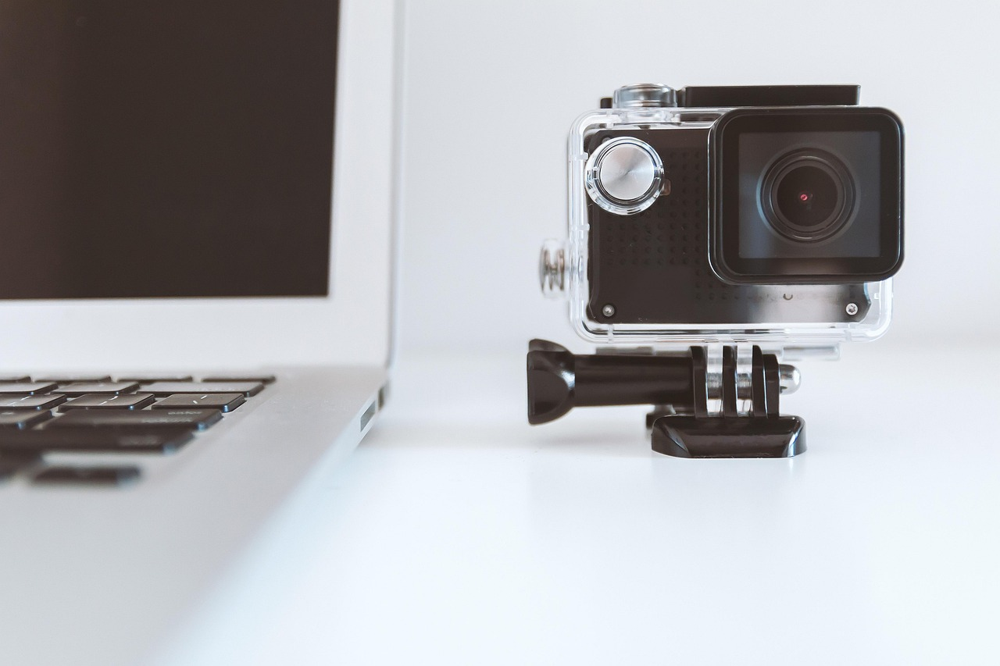

Vapaa-ajallani rakastan luoda, oppia ja ilmaista itseäni eri tavoilla.
- Kuvien ja videoiden tekeminen - käytän tekoälyä kertoakseni tarinoita.
- Sosiaalinen media - teen sisältöä, joka liittyy kieliin, elämään ja oppimiseen.
- Kielten oppiminen - erityisesti suomen kieli on lähellä sydäntäni.
- Lukeminen - luen kirjoja suomeksi, vaikka se on välillä haastavaa.
- Luonto - kävely rauhallisessa ympäristössä antaa minulle inspiraatiota ja rauhaa.
Minulle harrastukset eivät ole vain ajanvietettä - ne ovat tapa kasvaa, rentoutua ja löytää oma ääni.
